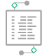

智能化DevOps
为您的软件交付过程获得前所未有的洞察力和决策支持

发布编排
协调跨技术和业务团队的完整发布渠道，管理自动和手动步骤
自动化部署
自动化和标准化云，容器和传统环境中的复杂部署
可视化所有的工具链
建立在现有工具之上，并在整个软件交付过程中获得完整的可视性
智能化DevOps
为您的软件交付过程获得前所未有的洞察力和决策支持
发布编排
协调跨技术和业务团队的完整发布渠道，管理自动和手动步骤
自动化部署
自动化和标准化云，容器和传统环境中的复杂部署
可视化所有的工具链
建立在现有工具之上，并在整个软件交付过程中获得完整的可视性
可随时查看流水线执行进度，结果，报告，日志，确保每个角色都能看到发布状态信息
自动化无人值守执行任务，自由选择支持自动任务和定时任务，支持按天、按月等周期任务制定
实时监控代码管理工具，自动生成团队生产力可视化图表
集成代码质量管理服务，可进行多种语言的代码静态检查、代码安全检查、质量评分、代码缺陷改进趋势分析，精确定位缺陷，提供修复指导